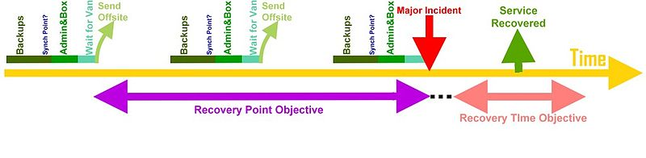

The recovery point objective (RPO), is the maximum tolerable period in which data might be lost from an IT service due to a major incident.
The RPO gives systems designers a limit to work to.
For instance, if the RPO is set to 4 hours, then in practice, offsite mirrored backups must be continuously maintained and off-sited within this timeframe
A daily offsite backup on tape will not suffice.

The above figure is an example of how RPO (in purple) might pan out in a practical situation (assume a full/immediate major incident causing a site loss).
The latest backups off-sited during the accepted RPO time frame should be used for DR.
The first backup is outside the RPO and is invalid.
In this case only the second off-sited backup is valid.